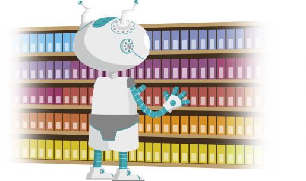
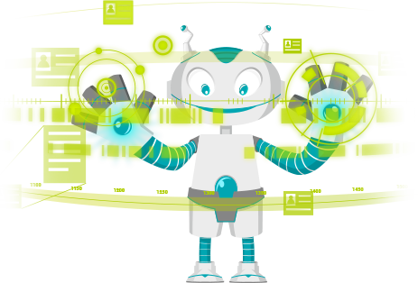

Nucleotic est un logiciel pour les médecins généralistes et spécialistes entièrement gratuit doté d'une communauté en ligne intéractive et de fonctionnalités innovantes vachement sympas (logiciel 100% en ligne, sur serveur HDS sécurisé, certifié HAS...). Existe aussi en version avancée


Reconnu comme logiciel de santé par la haute autorité de santé, et pourtant c'est pas très simple
Aide à la prescription, messagerie sécurisée de santé, cartes vitales, télétransmission, ...
Toutes vos données sont stockées sur des serveurs agréés par le gouvernement français, en France et vous en avez le contrôle complet et exclusif
PC, Mac, Smartphone, tablette, Frigidaire : Nucleotic fonctionne sur de très nombreux supports
Si la version gratuit ne vous suffit pas, Nucleotic existe en version avancée, avec de nombreuses autres fonctionnalités
Cliquez sur les ? pour obtenir plus d'informations |
 gratuit |
 version avancée (100% ROSP) |
à la carte basée sur la version avancée |
|---|---|---|---|
| Licence utilisateur | |||
| Dossier patient | |||
| Gestion de planning | |||
| Moteur de recherche intelligent | |||
| Logiciel 100% en ligne | |||
| Prise de rendez-vous en ligne | |||
| Compatibilité | |||
| Statistiques avancées | |||
Nucleotic est un logiciel de gestion médicale pour les médecins généralistes & spécialistes :
gérez vos
rendez-vous, vos fiches patients, votre comptabilité n'aura jamais été aussi simple et facile d'accès.


Découvrez immédiatement en quoi Nucleotic va révolutionner votre métier !

Véritable compagnon technologique, ce moteur de recherche basé sur une intelligence artificielle maison,
est un véritable assistant qui vous aidera dans toutes vos tâches quotidiennes(liées au logiciel...What
else?).Vous ne savez plus comment faire telle ou telle chose avec votre logiciel Nucleotic?
Tranquillisez-vous et tapez simplement les mots clés ou votre demande en bon Français, Nucléo les
trouvera pour vous.
Accédez en un clic aux documents d'un patient, à votre compta et bien
plus.

Profitez,avec la version avancée de Nucleoctic, de laprise de rendez-vous en ligne.Vos patients pourront prendre rendez-vous directement depuis votre site web ou notre plateforme de mutualisation un rendez-vous sur un des créneaux que vous aurez renseigné en quelques clics dans votre espace client dédié.Les patients recoivent un email de confirmation ainsi qu'un SMS de rappel 2 jours,1 jour,ou le matin même du rendez-vous selon vos souhaits. Simple,pratique et intuitif. Quand on sait que certains facturent cette fonctionnalité plus de 100 euros par mois, on s'est dit qu'il fallait faire quelque chose ! Et bien sûr, vous pouvez modifier, annuler et consulter vos rendez-vous où que vous soyez et sur n'importe quel support (PC,MAc,Linux,Smartwatch,Minitel...)

Très proche de la feuille de soin classique que vous connaissez par coeur,Nucleotic propose un système de FSE clair et limpide.Totalement sécurisé selon ses prérogatives du gouvernement,cela ne prend que quelques secondes à remplir. Vous gagnez en temps et en fluidité et tout le monde s'y retrouve. Vous pouvez programmer l'envoi de vos FSE afin de ne pas perdre de temps à le faire à la main : Nucleotic vous informe des opérations, que tout se soit bien passé, ou en cas de souci.

Poussez madame,poussez ! Cet outil fort sympathique vous permet de réaliser le suivi de grossesse de vos ptientes.Vous avez notamment accès au calendrier de grossesse,aux dates auxquelles les échographies sont conseillées,mais également les visites prénatales,date prévisionnelle d'accouchement, etc..., et nous avons même préparé un calcul de congé natalité à remettre à vos patientes, ainsi que des documents préremplis pour vous faire gagner du temps. Une fonctionnalité Nucleotic totalement gratuite, dans notre logiciel du médecin ... totalement gratuit ! Sympa non ?

Nucleotic propose l'ensemble des statistiques dont vous avez toujours rêvé. Toutes les informations présentes dans le logiciel grâce à vos fiches patients et tous vos documents sont compilés et vous permettent d'un coup d'oeil d'obtenir de précieuses informations. Poids moyen de votre patiente par tranche d'âge, maladies les plus courantes, mesurer la fréquence d'apparition d'une maladie et, pourquoi pas, détecter une épidemie qui se prépare et bien plus encore. Nous prévoyons d'interconnecter tous les médecins du réseau Nucléotic afin de vous donner accès à une base de données anonyme conséquente vous permettant de réaliser des statistiques fiables par ville ou par région. Nucléotic : des statistiques fantastiques pour un monde fantastiques (humour d'informaticien).
Vidal, Claude Bernard, Thériaque : c'est vous qui choisissez la base que vous voulez greffer à Nucléotic. Les fonctionnalités d'aide à la prescription dépendent évidemment de la base que vous choisissez. Par défaut, Nucléotic embarque la base de données publique du médicament fournie gratuitement par le gouvernement.
Nucleotic pouvant fonctionner 100% en ligne, vos données bénéficient d'un hébergement agréé HDS (Hébergement des Données de Santé) sur des serveurs basés en France. Ils vous permettent de pouvoir accéder où que vous soyez dans le monde à vos données et à partir de n'importe quel support (Smartphone, Ordinateur, Tablette, Montre connectée ...), peu importe que ces derniers soient puissants ou (pratiquement) obsolètes.
Un site web coûte cher, très cher. Trop cher en fait pour ce qu'un médecin a le droit d'en faire. C'est
pourquoi nous avons décidé de mettre un coup de pied dans la fourmillère, n'en déplaise à nos amis
défenseur de la cause animale, en offrant sa page web personnalisée à toute personne utilisant notre
version avancée.
Nous nous occupons de tout. Vous n'aurez qu'à renseigner vos coordonnées. Cette page
regroupera vos informations professionnelles importantes, telles que votre adresse, les moyens de vous
contacter, votre specialité et, le plus important, LA PRISE DE RENDEZ VOUS EN LIGNE. On le dit en
lettre capitale, parce que c'est quand même un événement en soi. Vos patients pourront désormais prendre
rendez-vous directement depuis votre page web selon les disponibilités que vous aurez au préalable
renseignées !

Insérez la carte SESAM-Vital de votre patient et Nucleotic s'occupe de tout, vraiment tout: créez son
dossier en un clic ou consultez-le s'il existe déjà sans même cliquer ! Il ne vous reste plus qu'à faire
ce que vous savez faire mieux que quiquonque : soignez vos patients.
C'est simple, rapide et
intuitif.

On a longtemps cherché comment vous faire gagner du temps et améliorer votre qualité de vie de médecin. Car, pour que les patients aient de meilleurs soins, encore fallait-il permettre aux médecins de se reposer plus. C'est en constatant que nombre d'entre vous passaient leurs weekends et jours de vacances sur leur comptabilité que nous avons décidé de faire de Nucléotic une véritable aide comptable. Impayés, extraction vers votre tableur préféré, tout prêt à envoyer à votre comptable, suivi de vos recettes, remboursements AMELI ... On a pensé à tout pour qu'en un clic vous ayez une vision globale sur ce qui rentre et ce qui sort. Vos documents comptables sont rangés, triés et permettent à votre comptable de gagner du temps et à vous d'économiser de l'argent. La version avancée vous permet de bénéficier de tous les modules de comptabilité, alors il est temps de profiter de weekends de déééteeeeeente !

Savoir où en est son patient en termes de taille,de poids, de corpulence, par rapport aux patients de même sexe et de même âge vous permet de mieux suivre vos patients? Notre module biométrie vous permet de suivre rapidement cet indicatif et de prendre les mesures adéquates en cas de problème.On a même pensé à vous fournir des statistiques avancées pour l'ensemble de vos patients.

Que vous soyez Docteur généraliste, spécialiste ou chirurgien plastique, vous avez certainement besoin d'une gestion puissante, claire et efficace de vos documents (documents administratifs, médicaux, qu'il s'agisse d'images, vidéos, sons ou documents textuels). Nucléotic se charge de ranger et trier vos documents en fonction de différents aspects (patients, nature du document, contenu, etc.). Vous gagnez en clarté,en temps et en possibilités. Grâce à Nucléotic vous pouvez accéder à vos documents même lorsque vous n'êtes pas à votre cabinet et ainsi pallier une urgence ou un oubli. Cette gestion de document est suffisamment puissante pour répondre aux besoins d'un hopital, alors n'hesitez pas et testez-nous : c'est gratuit ! Cette fonction alliée à note moteur intelligent va vous décoiffer (gel non fourni).